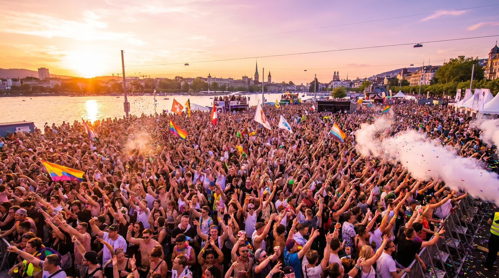
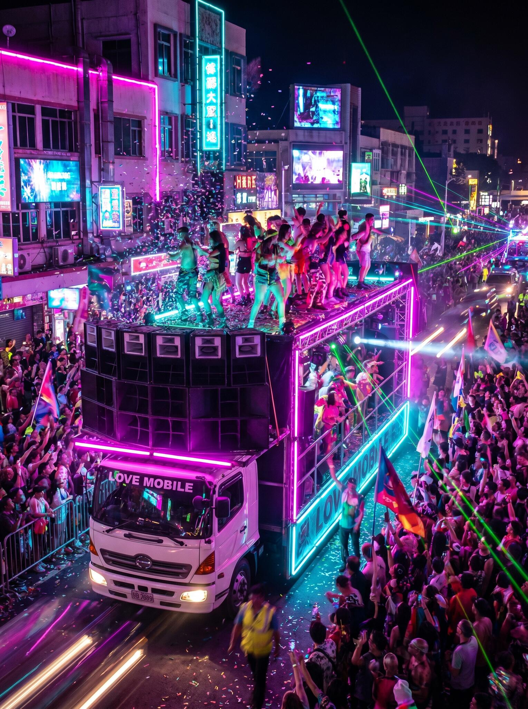
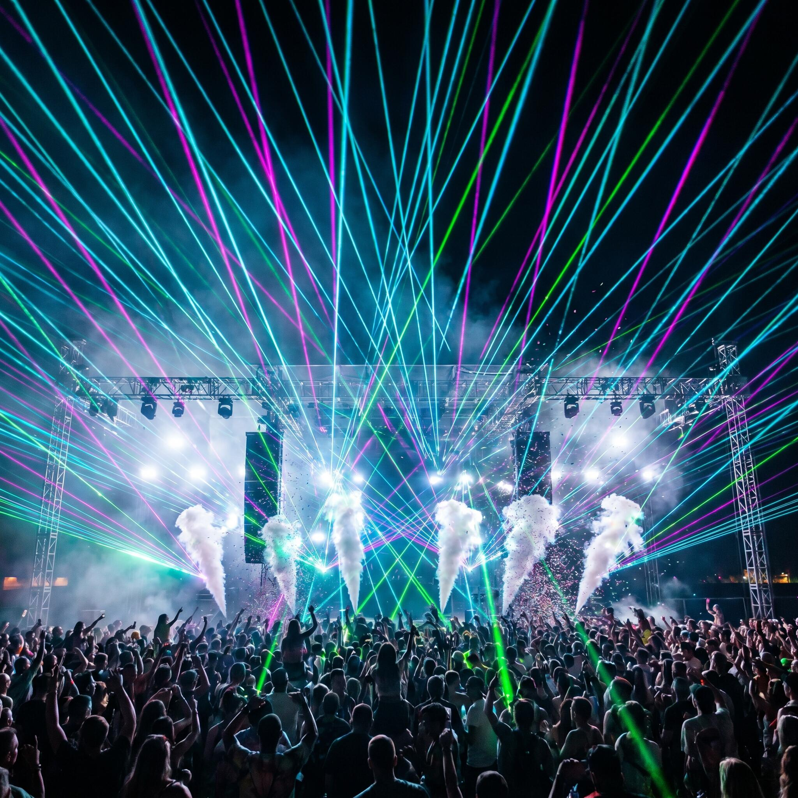
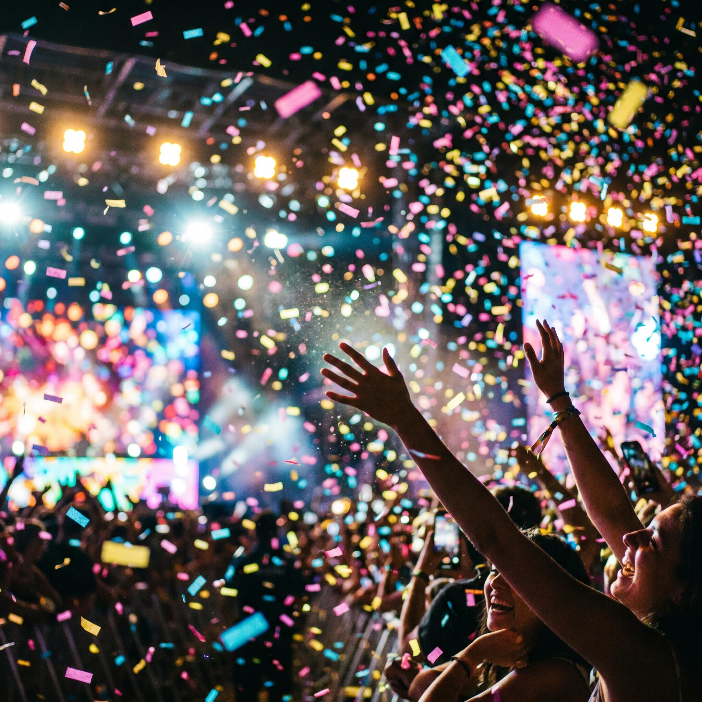
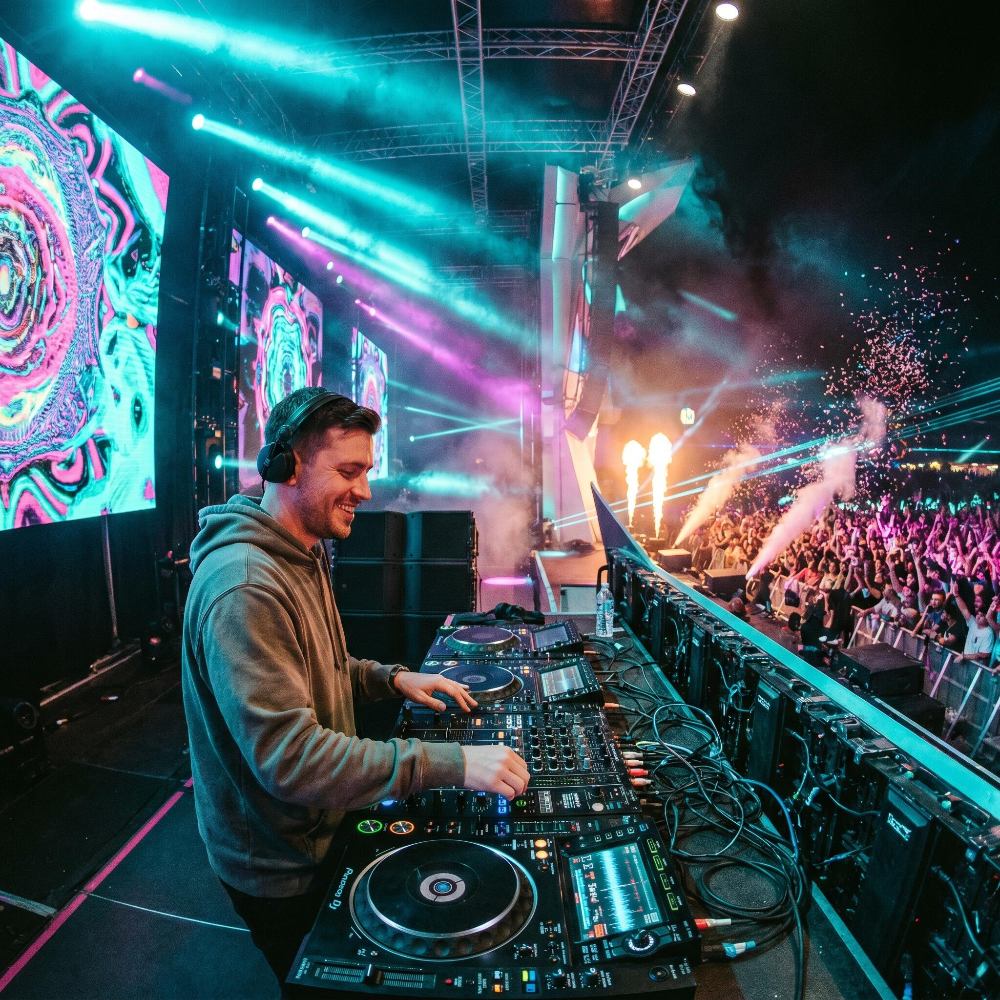
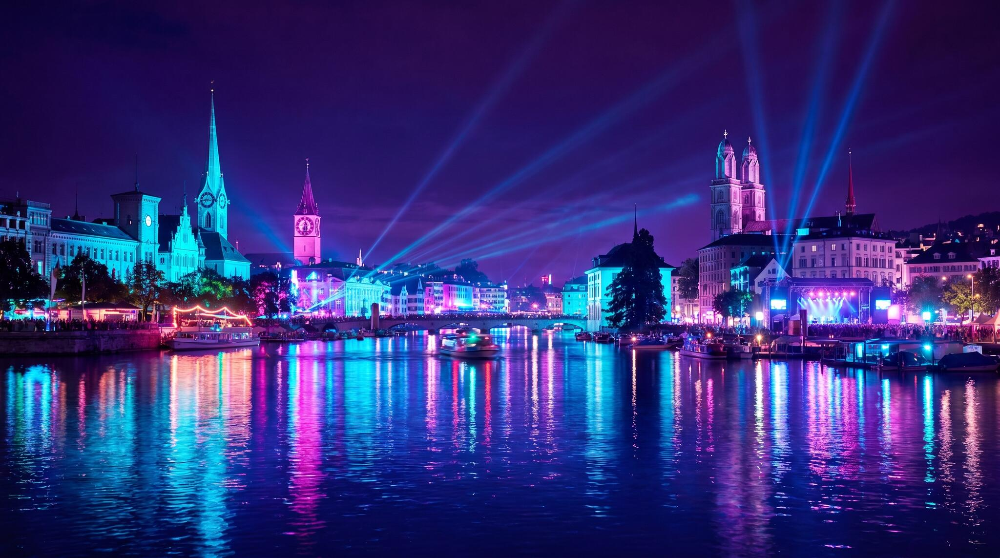

Die grösste Techno-Party der Welt kehrt an den Zürichsee zurück. Eine Million Menschen, ein einziger Beat.
Tanz mit uns ↓Seit 1992 verwandelt die Street Parade das Zürcher Seebecken in den grössten Open-Air-Dancefloor der Welt. Was als kleine Demonstration für Liebe und Toleranz begann, ist heute ein globales Phänomen.
Riesige Love Mobiles rollen entlang des Quais, gefüllt mit DJs, tanzenden Menschen und donnernden Beats — von House über Techno bis Trance. Die Parade ist kostenlos, friedlich und offen für jede und jeden.
Brettharte Beats und treibende Kicks für die Unermüdlichen am Bürkliplatz.
Groovige Vibes und Sonnenuntergang direkt am Wasser des Zürichsees.
Melodische Höhenflüge und Hände in der Luft, wenn der Drop kommt.
Goldene Klassiker und tanzbare Grooves für gute Laune unterwegs.
Rasante Breakbeats und Sub-Frequenzen, die durch Mark und Bein gehen.
Hypnotische Loops und reduzierte Klangwelten für die feine Klinge.
Ein Vorgeschmack auf die Stimmung — handgezeichnete Neon-Szenen vom grössten Tanzfest am Zürichsee. Tippe auf ein Bild.






Komm vorbei, bring deine Freunde mit und tanz für eine offene, tolerante Welt. Die Strasse gehört der Liebe.
Nach oben ↑